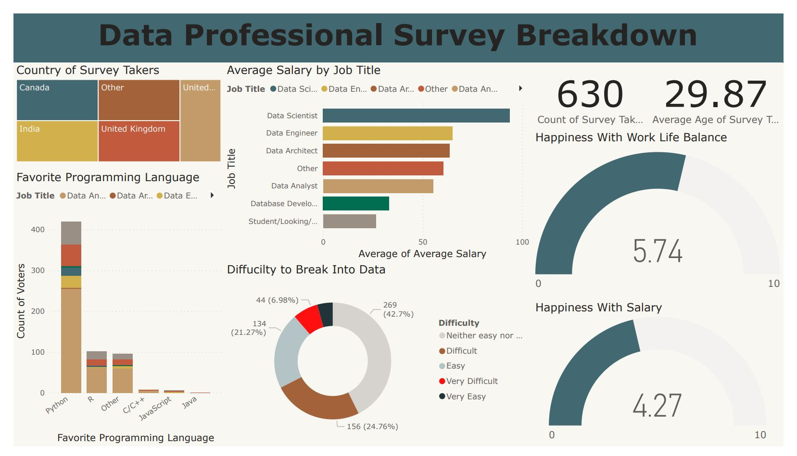

👔 Power BI Portfolio: Decoding Insights from a LinkedIn Survey Analysis
Unveiling Professional Perspectives: A Power BI Journey through LinkedIn Survey Insights

Embark on a journey into the realm of workplace sentiments and data analytics as we delve into the intricacies of a comprehensive survey conducted among Alex the Analyst's LinkedIn connections in the United States. This Power BI portfolio project serves as an illuminating exploration, capturing the pulse of professionals in the field, their preferred programming languages, job satisfaction, salary insights, and the perceived challenges of a data analyst role.
The foundation of this project lies in the data collected through a meticulously crafted survey. LinkedIn connections generously shared their perspectives on programming language preferences, job satisfaction levels, salary satisfaction correlated with job titles, work-life balance, and the perceived difficulty of the data analyst role. The diversity of responses, ranging from seasoned professionals to those navigating early career stages, provides a holistic view of the data professional landscape..
The survey unveils a rich tapestry of programming language preferences among data professionals. Power BI, Python, and SQL emerge as stalwarts in the data domain, each holding a unique position in the toolkit of these professionals. The visualization of these preferences not only reflects current trends but also acts as a compass for aspiring data enthusiasts seeking to align their skill sets with industry preferences.
One of the survey's focal points was to gauge job satisfaction and delve into salary insights. Power BI's prowess comes to the forefront as it translates raw survey data into vibrant visualizations. Professionals shared their contentment levels, with a nuanced exploration of how job titles correlate with salary satisfaction. The visual narrative provides a dynamic overview, guiding professionals to make informed decisions about career trajectories and job expectations.
Work-life balance is a critical facet of professional contentment. The Power BI visualizations spotlight the delicate interplay between work-life balance satisfaction and salary contentment. This analysis not only empowers professionals to assess their current situations but also serves as a valuable resource for organizations aiming to create environments conducive to both personal well-being and professional success.
Perceptions of the data analyst role's difficulty level vary among professionals. The survey insights, now intricately woven into Power BI visuals, outline the diverse perspectives on the challenges posed by the role. This section serves as a compass for those navigating the data analytics landscape, offering insights into what to expect and how to overcome potential hurdles.
As we conclude this Power BI portfolio project, the intricate visualizations serve as windows into the collective psyche of data professionals. The amalgamation of programming language preferences, job satisfaction nuances, salary insights, work-life balance considerations, and perceptions of the data analyst role creates a rich mosaic of insights. Navigating this Power BI voyage offers not just a data analysis but a holistic understanding of the dynamic landscape in which data professionals thrive.
For those eager to explore the full breadth of survey insights and visualizations, the complete Power BI experience awaits on my Power BI Visualization on GitHub. Join me in deciphering the narratives within the data, and let's continue this exploration into the multifaceted world of data analytics. Your curiosity is the compass that guides us through the layers of insights waiting to be unveiled.